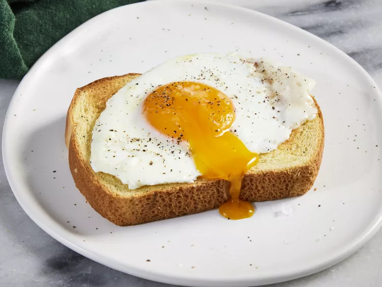

Basted Eggs

Description
A basted egg is somewhere between a sunny side up fried egg and a poached
egg. Basted eggs are fried on the bottom and steamed on top. They look
similar to sunny side up eggs, but the yolk is slightly more set.
Ingredients
- 1 ½ tablespoons salted butter
- 2 large eggs
- 1 tablespoon water
- ⅛ teaspoon freshly ground black pepper
- 1 pinch flaky sea salt, or to taste
Steps
Melt butter in a medium nonstick skillet over medium heat. Carefully crack
eggs into the skillet and let cook until whites have almost set, about 1
minute.
Add water, cover skillet with a lid or cookie sheet, reduce heat to
medium-low.
Let cook until whites have set, yolks are still runny, and some of white
has set over yolk, 1 to 2 more minutes. Remove lid and transfer eggs to a
serving plate. Garnish with pepper and flaky salt, if desired. Serve
immediately.
Back To Home